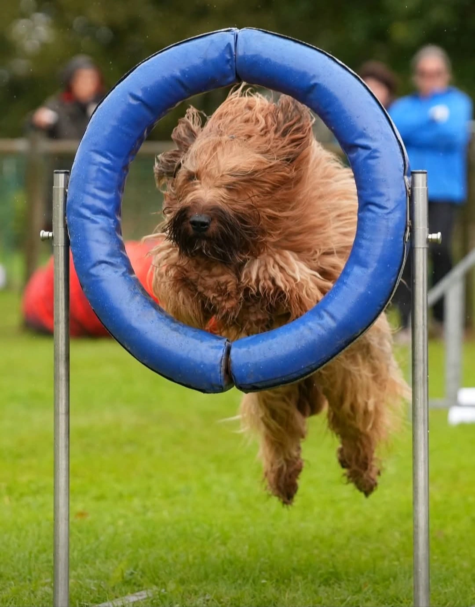
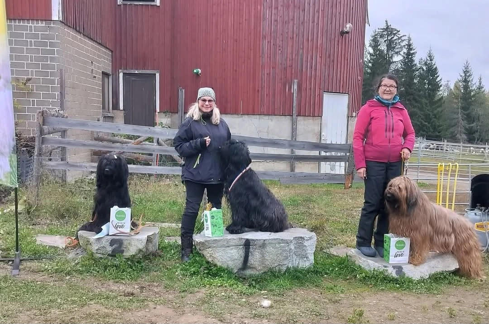
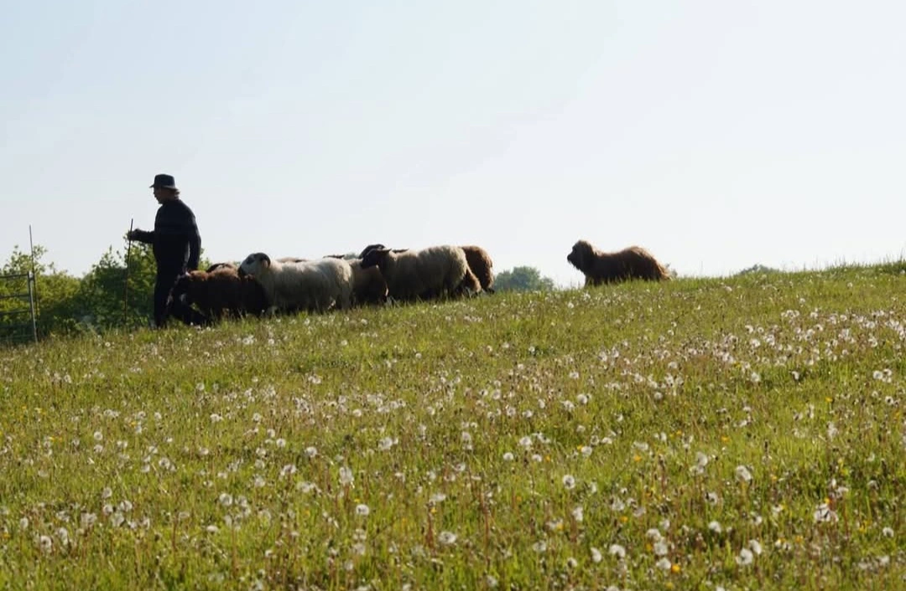
 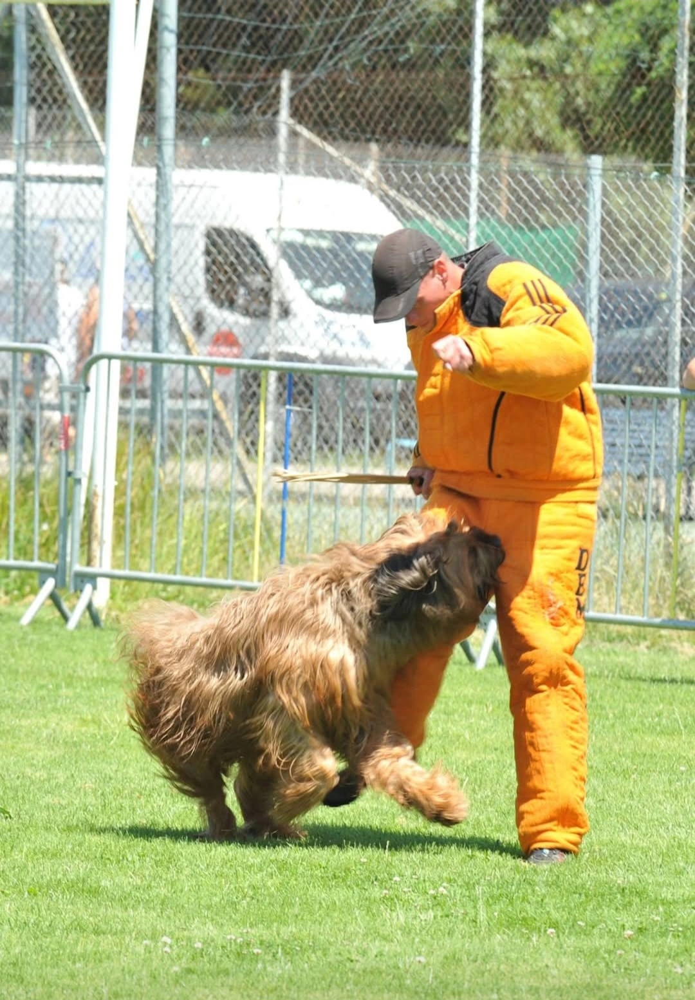
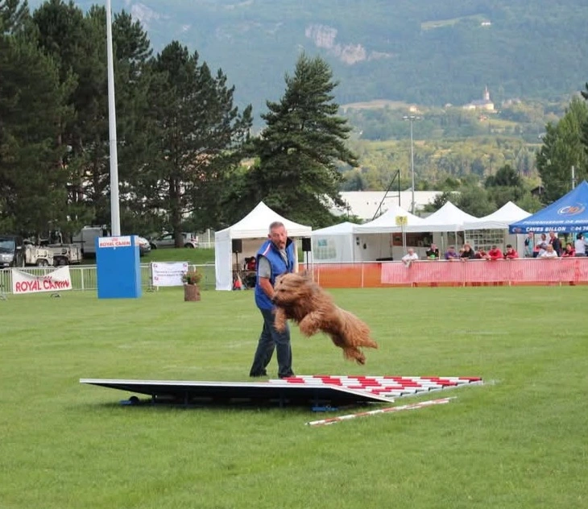
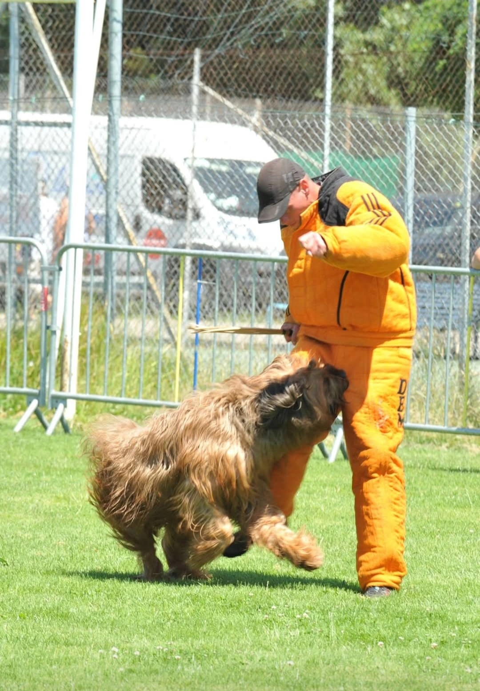
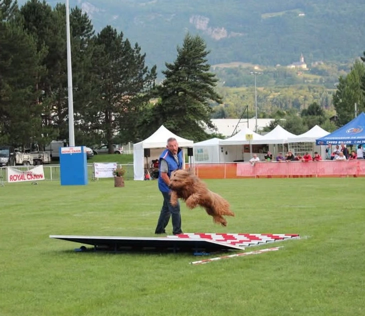
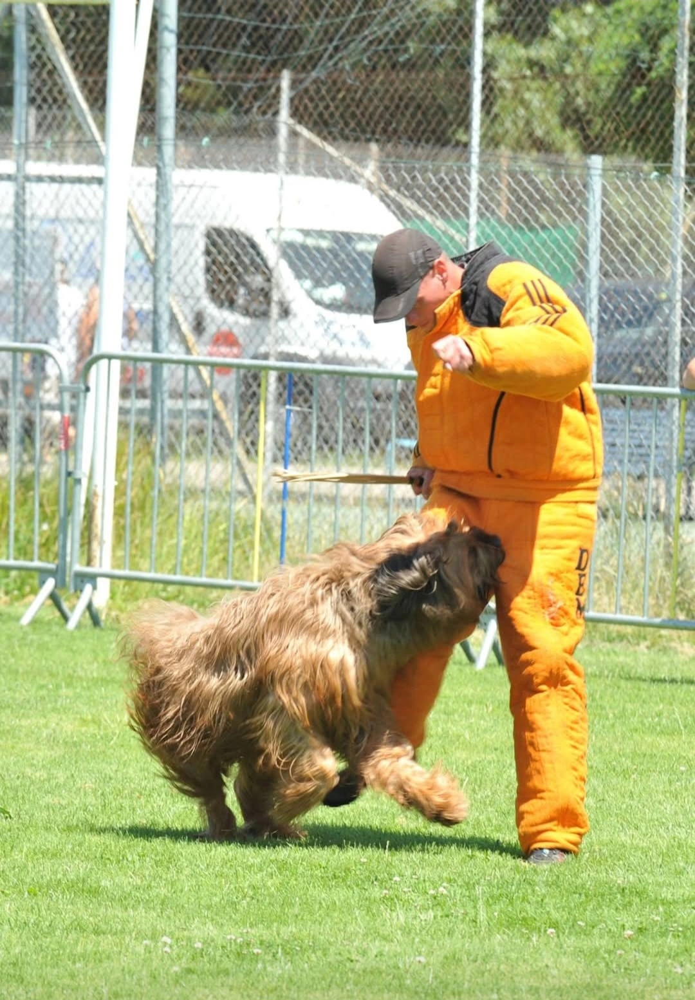
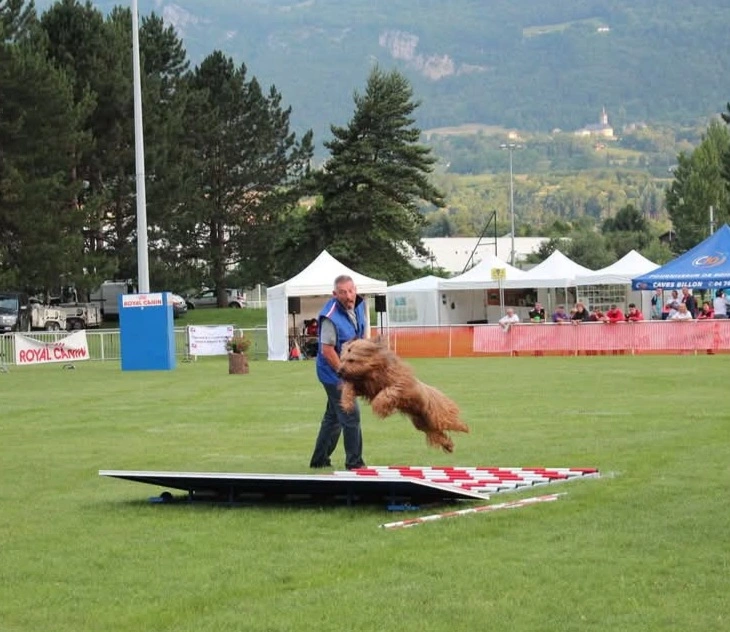
Dundee de la Chaume du Bois Dieu
Brevet chien d'avalanches
Gnome de la Chaume du Bois Dieu
Obéissance classe 1
Conductrice Virpi Leskinen
H' Andalou de la Chaume du Bois Dieu
Ring 2
Houille de la Chaume du Bois Dieu
Pistage , Rci 1
Philippe Staquet
Harmi de la Chaume du Bois Dieu
Pistage 2 accès 3 , JK2 Finlande
Conductrice Minna Uussitalo
CH O P'tit Loup de La Chaume du Bois Dieu
Brevet ring
Conducteur Jean Marc Delplanque
CH Toutempoil de la Chaume du Bois Dieu
Ring 2 , accès Ring 3
Conducteur Christophe Bordeau
CH , CIB ,Tabula Rasa de la Chaume du Bois Dieu
CH obéissance Finlande
Brevet recherche searching trial
Conductrice Virpi Leskinen
CH Ramsay de la Chaume du Bois Dieu
RCI1
Conducteur Mr Baron
CH , CIB ,Vivien Chantal de la Chaume du Bois Dieu
RCI1
Conductrice Eva Darowska
CH Adjamane de la Chaume du Bois Dieu
Pistage niveau 2
Conductrice Danièle Pfefferkorn
Bashane de la Chaume du Bois Dieu
Agility Championne de Picardie
Carpe Diem de la Chaume du Bois Dieu
Brevet BH recherche
Obéissance classe 1
Conductrice Virpi Leskinen
Dalton de la Chaume du Bois Dieu
Obéissance classe 2
Conductrice Emmanuelle Pascal
Domingo de la Chaume du Bois Dieu
Chien guide d'aveugle
Conductrice Nadège Louvet
Ester de la Chaume du Bois Dieu
CH obéissance Suède
Conductrice Agneta Sundin
Elfi de la Chaume du Bois Dieu
Pistage 2 , Grand prix de France 2014 , accès 3 , Championne régionale des Pays de Loire
Conducteur Dominique Coquerie
CH Gelinotte de la Chaume du Bois Dieu
Pistage 2
Conductrice Danièle Pfefferkorn
CH Hippy de la Chaume du Bois Dieu
Ring 2
Conducteur Christophe Bordeau
Halcyon de la Chaume du Bois Dieu
Agility grade 2
Conductrice Anne Marie
Ho Mon Idole de la Chaume du Bois Dieu
Troupeau CACCBT
niveau 1 en continental
OBEISSANCE classe 2
Conducteur Frederic Pascal
Jagy de la Chaume du Bois Dieu
Travail sur troupeau USA
Conducteur Urs Wiederkehr
Letssy de la Chaume du Bois Dieu
Troupeau FCI IHT-1, accès IHT-2
Conductrice Alexia Heurtevent
Nours de la Chaume du Bois Dieu
Canivtt
Conducteur Didier chevru
Ojos de la Chaume du Bois Dieu
Chien guide d'aveugle
Conductrice Nadège Louvet
CH Royale dream de la Chaume du Bois Dieu
Troupeau HWT ,CACCBT
FCI IHT-2 accès IHT-3
Conductrice Virpi Leskinen
Sanka de la Chaume du Bois Dieu
Troupeau HWT. CACCBT
continental niveau 1
FCI niveau 1
Conducteur Didier Chevru
Stardust de la Chaume du Bois Dieu
Suède
Conservation detection dog,
Diploma in NW1 TSM,
Diploma in NW1 TEM outdoor
Diploma in NW1 vehicle
Conductrice Åsa Fredriksson
Uptown Girl de la Chaume du Bois Dieu
Agility grade 2
Conductrice Carole Seite
U2 de la Chaume du Bois Dieu
Brevet ring
Conducteur Christophe Bordeau
U'VALLOIRE de la Chaume du Bois Dieu
Brevet Pistage
Conductrice Sandrine Paccaud
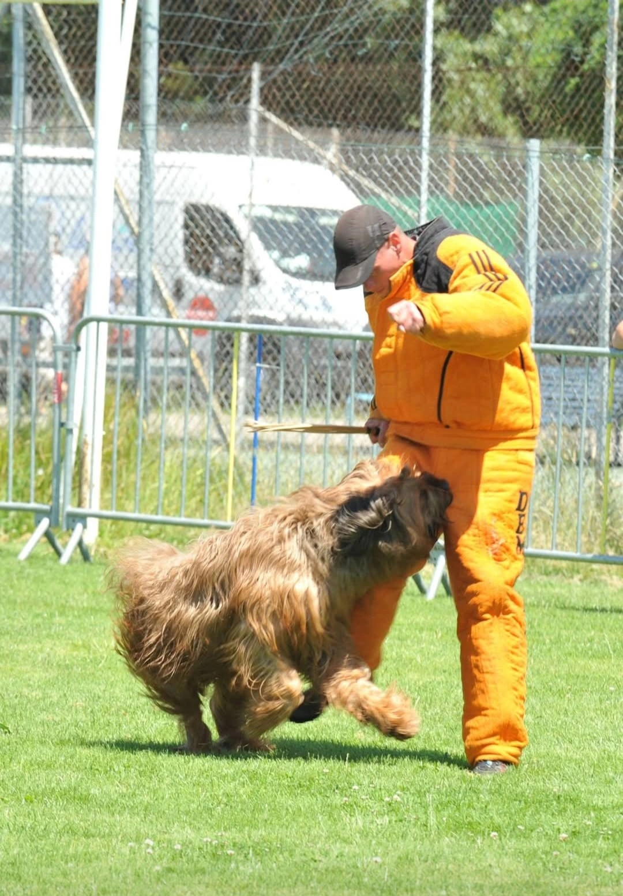
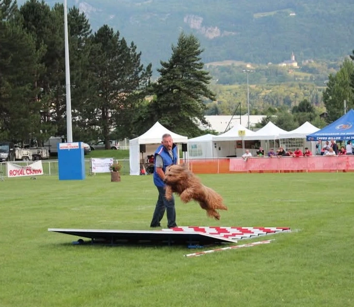